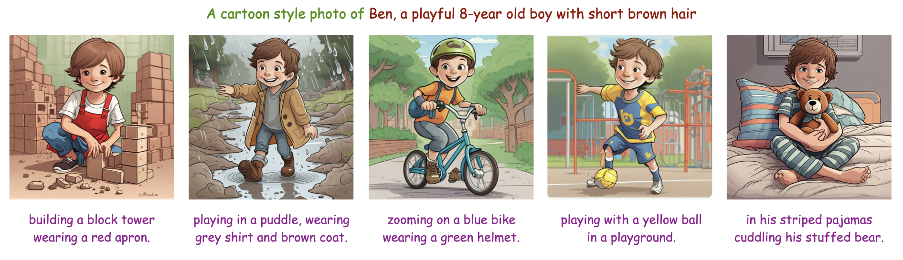
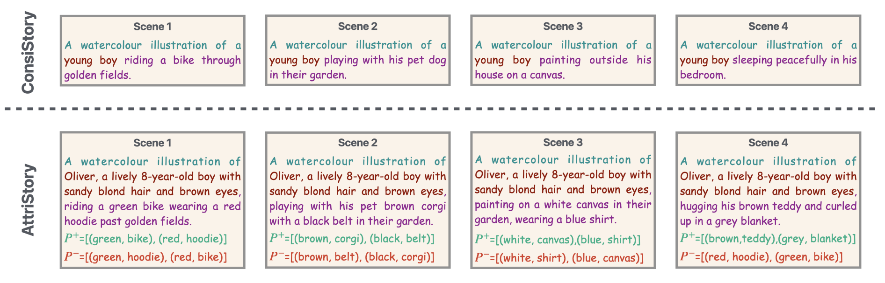
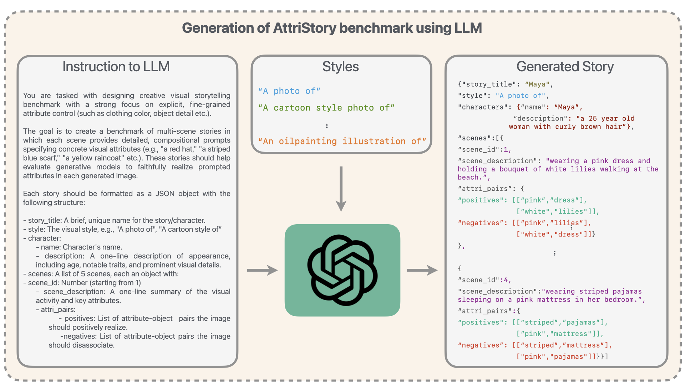
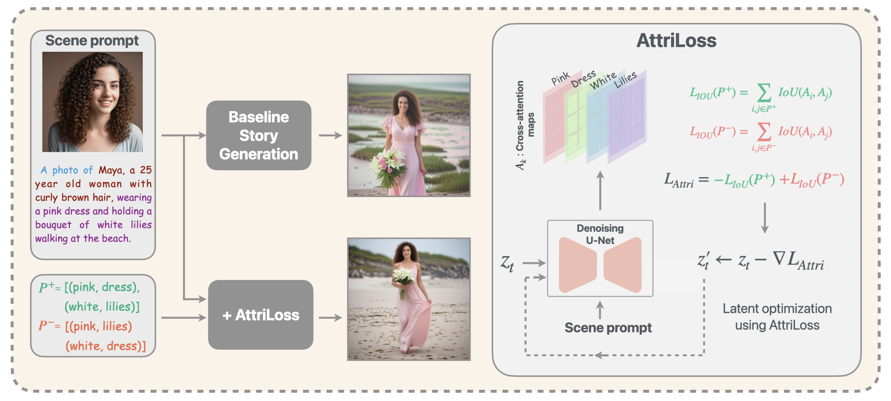
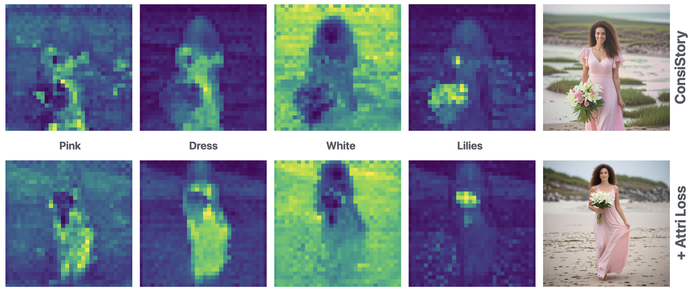
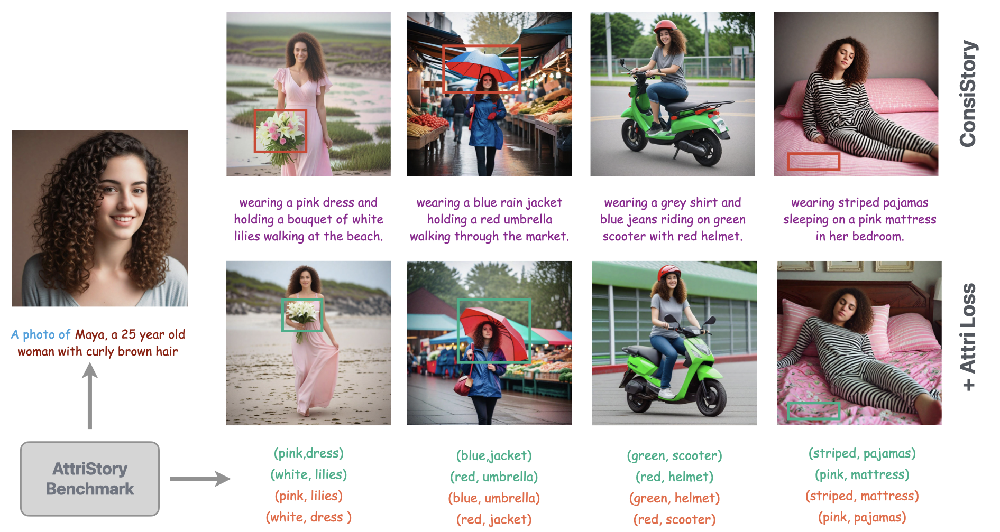
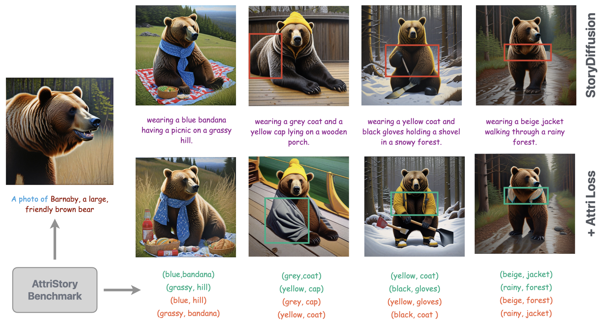
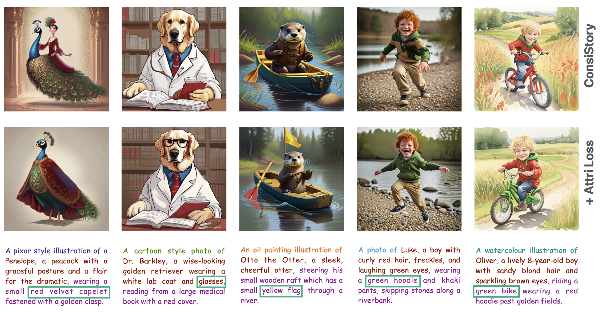

Visual storytelling with diffusion models has made impressive strides in maintaining character consistency across narrative scenes. However, a critical gap remains: while these methods ensure a character remains consistent across scenes, they provide no systematic method to ensure if fine-grained attributes such as color and textures of clothing, accessories are faithfully rendered in the generated images. Towards this goal, we introduce AttriStory, a benchmark enabling attribute realization in visual storytelling. We curate 200 multi-scene stories across 10 distinct artistic styles using a Large Language Model. Each scene is constructed with detailed attribute specifications to enable rich visual narratives. Further, to address attribute realization, we propose a plug-and-play latent optimization module that operates during early denoising steps, when the model establishes structural and semantic content. We achieve this through the AttriLoss objective designed to maximize alignment between the cross-attention maps for desired attribute-object pairs while suppressing spurious associations, guiding models to localize attributes correctly. This approach operates orthogonally to existing consistency mechanisms, integrating seamlessly with current story generation pipelines without requiring architectural modifications. Our experiments demonstrate consistent improvements on incorporating AttriLoss across all baselines. This work positions attribute realization as a distinct, complementary dimension of visual storytelling, alongside character consistency, advancing the field toward fine-grained attribute-controlled story generation.
Existing visual storytelling benchmarks (e.g., ConsiStory) capture narratives through minimal descriptions such as "A photo of a young boy riding a bike through golden fields." This is insufficient for professional creative workflows where artists specify rich details: "A watercolor illustration of Oliver, a lively 8-year-old boy with sandy blond hair and brown eyes, riding a green bike wearing a red hoodie past golden fields."
We define this as the attribute realization problem: ensuring that explicitly specified, fine-grained visual attributes (e.g., "red shirt", "blue sneakers") are actually realized in generated images, orthogonal to cross-scene character consistency.

We use ChatGPT to generate stories with the following structured components per scene:
The benchmark comprises 200 multi-scene stories (5 scenes each) across 10 distinct artistic styles: photo, cartoon style, 3D animation, watercolor illustration, oil painting, crayon drawing, neon punk style, Pixar-style, hyperrealistic digital painting, and pastel color painting. Each scene is annotated with 2 to 5 attribute-object pairs.


A key challenge in visual storytelling is imperfect alignment between prompt-specified attributes and generated visual objects. For a prompt like "wearing a pink dress holding a bouquet of white lilies," attention maps for tokens "pink" and "lilies" may overlap spatially even though "pink" should only attend to "dress". This ambiguous overlap causes the model to generate, e.g., pink roses instead of white lilies.
Our key observation is that cross-attention maps provide a direct visualization of attribute-object associations. We explicitly manipulate the spatial overlap between maps to encourage correct and discourage spurious associations.
For each text token \(k\), let \(\mathbf{A}_k \in \mathbb{R}^{H \times W}\) be its spatial cross-attention map aggregated across U-Net layers. The Intersection-over-Union between two maps is:
\begin{align} \text{IoU}(\mathbf{A}_i, \mathbf{A}_j) = \frac{\mathbf{A}_i \odot \mathbf{A}_j}{\max(\mathbf{A}_i + \mathbf{A}_j - \mathbf{A}_i \odot \mathbf{A}_j,\; \epsilon)} \end{align}
where \(\odot\) denotes element-wise multiplication and \(\epsilon\) is a small constant for numerical stability.
Let \(P^+\) be positive attribute-object pairs that should co-occur spatially, and \(P^-\) be negative pairs that should not. The loss is:
\begin{align} \mathcal{L}_{\text{Attri}} = -\sum_{(i,j) \in P^+} \text{IoU}(\mathbf{A}_i, \mathbf{A}_j) + \sum_{(i,j) \in P^-} \text{IoU}(\mathbf{A}_i, \mathbf{A}_j) \end{align}
The latent code \(\mathbf{z}_t\) is updated via gradient descent:
\begin{align} \mathbf{z}'_t \leftarrow \mathbf{z}_t - \nabla_{\mathbf{z}_t} \mathcal{L}_{\text{Attri}} \end{align}
This update is applied during the early denoising timesteps (steps 1–25 out of 50), which are critical for establishing structure and semantic content including colors and textures. AttriLoss integrates as a plug-and-play module with Vanilla SDXL, ConsiStory, and StoryDiffusion: no architectural modifications or retraining required.




We evaluate across four metrics: VQA-Score (attribute realization via VQA), CLIP-T (image-text alignment), CLIP-I (cross-scene character consistency), and DreamSim (perceptual quality). AttriLoss consistently improves all baselines. Notably, CLIP-I scores remain strong after adding AttriLoss, confirming that attribute grounding does not compromise cross-scene consistency.
| Method | VQA-Score ↑ | CLIP-T ↑ | CLIP-I ↑ | DreamSim ↑ |
|---|---|---|---|---|
| 1Prompt1Story | 0.8117 | 0.3816 | 0.8410 | 0.6929 |
| Vanilla SDXL | 0.7957 | 0.3696 | 0.8188 | 0.6760 |
| + AttriLoss | 0.8225 | 0.3775 | 0.8517 | 0.7170 |
| StoryDiffusion | 0.8363 | 0.3912 | 0.8301 | 0.6925 |
| + AttriLoss | 0.8636 | 0.3874 | 0.8553 | 0.7215 |
| ConsiStory | 0.8136 | 0.3871 | 0.8494 | 0.7326 |
| + AttriLoss | 0.8490 | 0.3909 | 0.8667 | 0.7555 |
Table 1. Quantitative comparison on integrating AttriLoss with prior visual storytelling methods. Bold green rows indicate + AttriLoss variants. ConsiStory + AttriLoss achieves the best overall performance.
@InProceedings{sreenivas2026attristory,
author = {Sreenivas, Manogna and Kumar, Rohit and Biswas, Soma},
title = {AttriStory: Fine-grained Attribute Realization for Visual Storytelling with Diffusion Models},
booktitle = {CVPR Workshops},
year = {2026}
}